Halal boneless beef available in store.
Halal butcher • Asian grocery • Fresh essentials
Visit SADIDS for halal beef, goat, lamb, ducks, chickens, fish, vegetables, rice, eggs, drinks, and Asian grocery items.
Online ordering is not available on this website. Please call or visit the shop for availability.
What we have
Use the filters to quickly view halal meat, fish, grocery, vegetables, and drinks. Product availability can change, so please call or visit to confirm.
Halal boneless beef available in store.
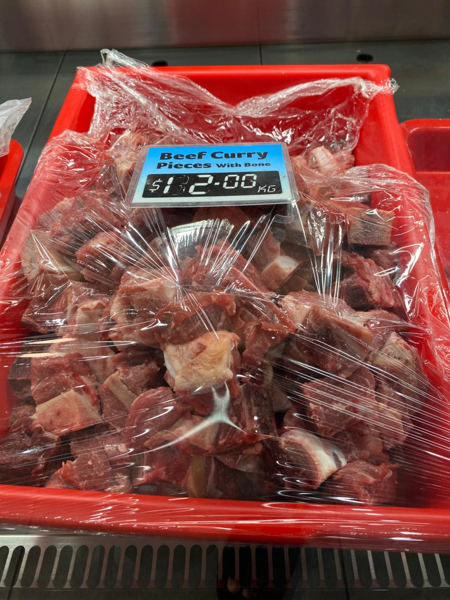
Halal beef cuts with bones.
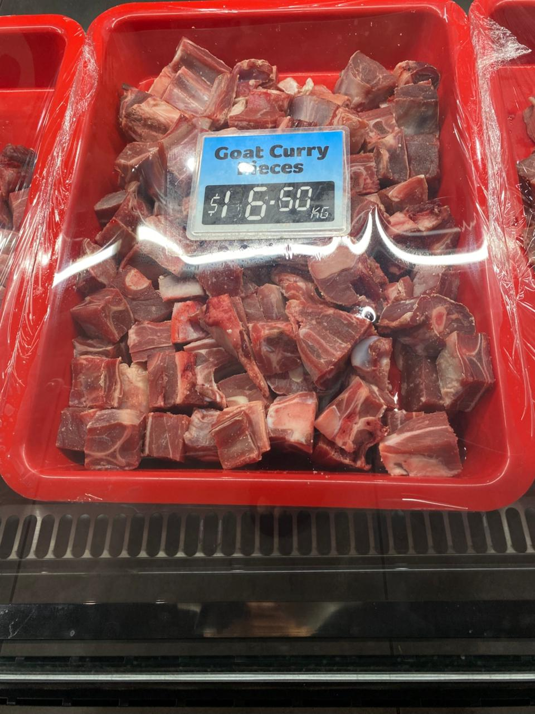
Halal goat meat for curries and home cooking.
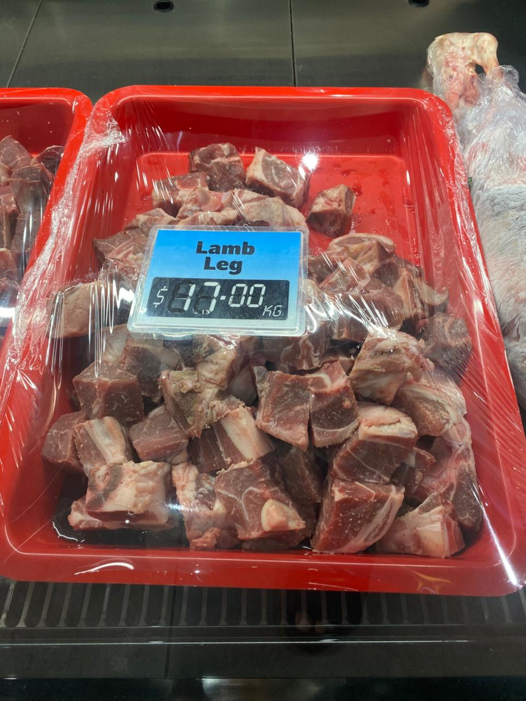
Halal lamb leg available from the butcher section.

Halal ducks and chickens available in store.
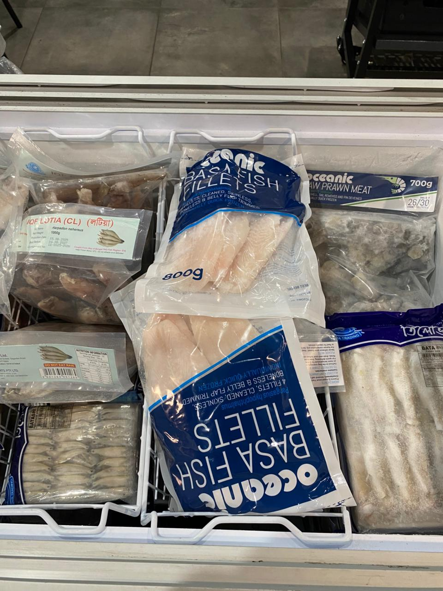
Fish selection available depending on supply.
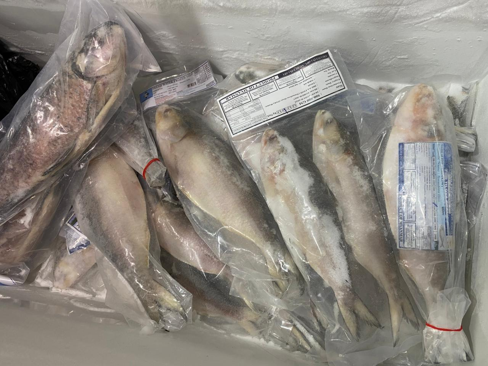
More fish options from the store display.

Rice and eggs for everyday household needs.
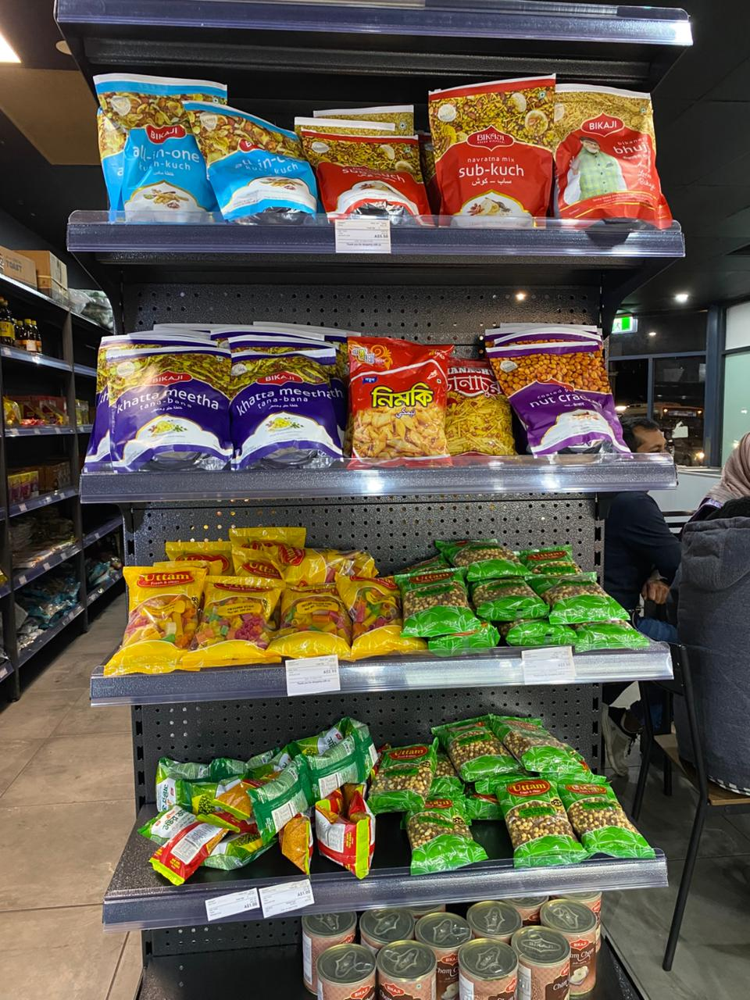
Asian grocery and pantry items.
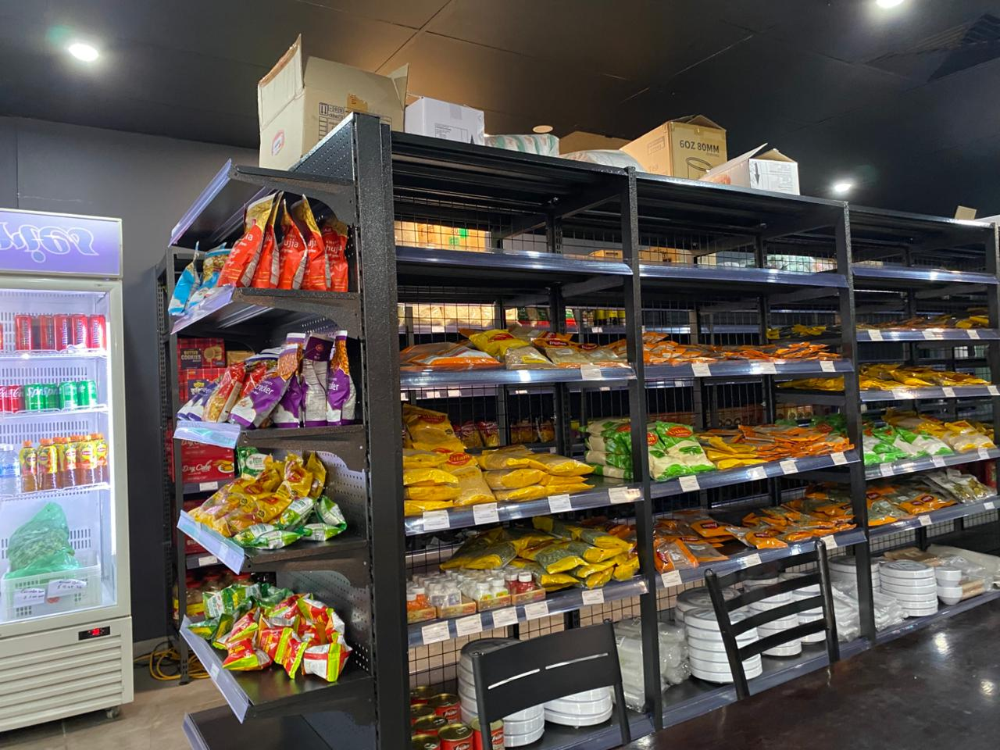
Additional grocery shelves and essentials.
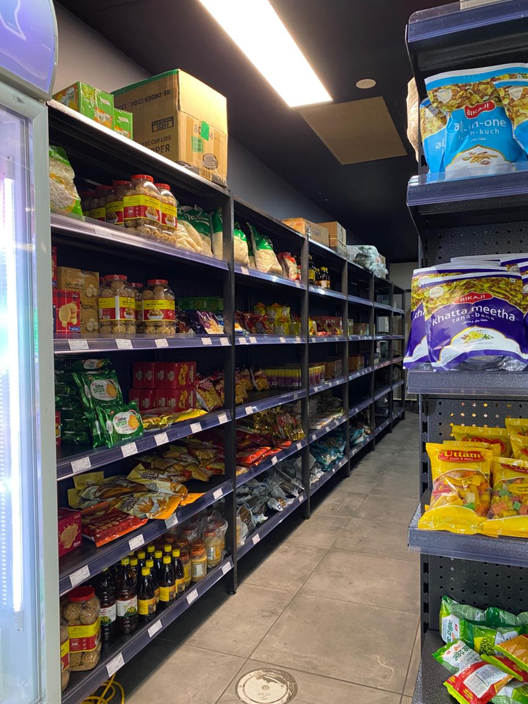
More grocery options available in store.
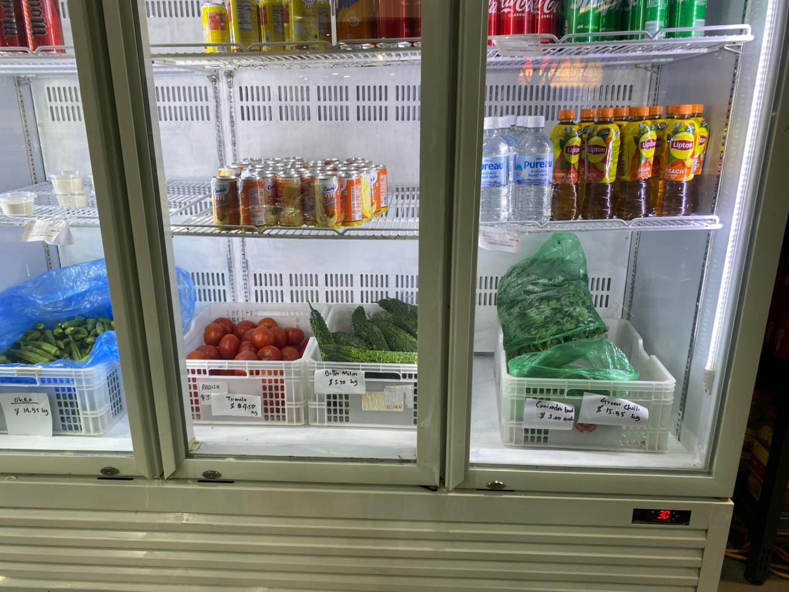
Fresh vegetables for cooking at home.
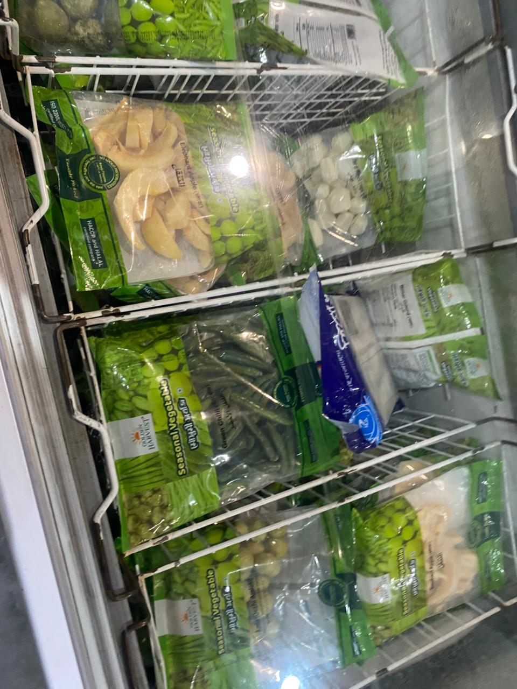
More vegetable options depending on availability.
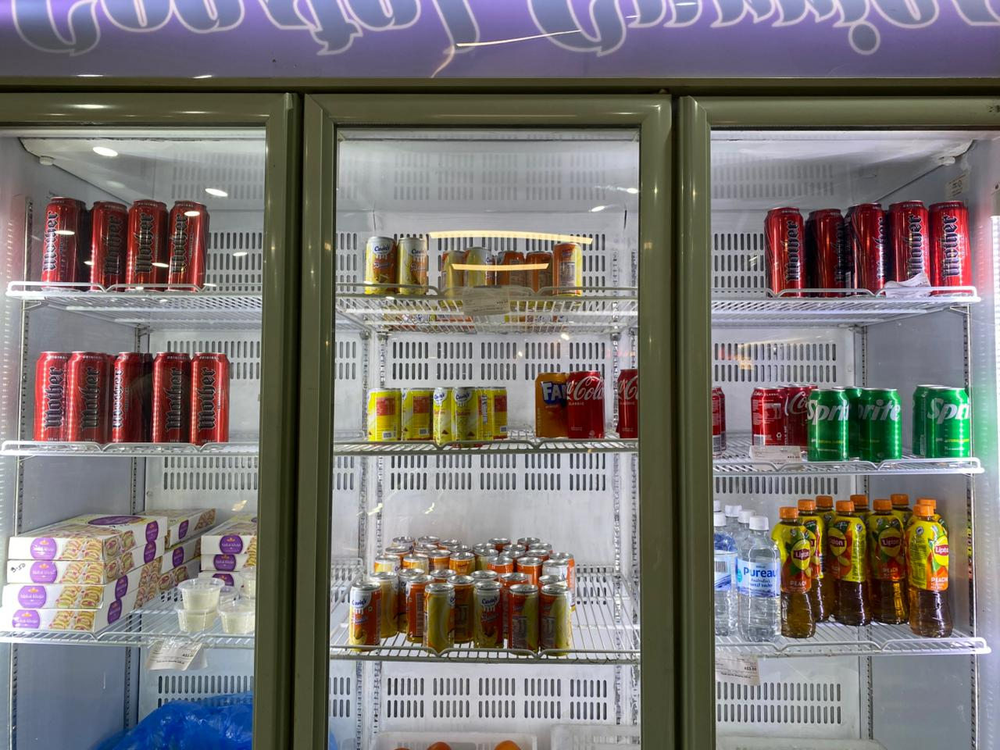
Soft drinks and cold drinks available in store.
Call or visit
SADIDS Butcher & Grocery products are shown for information only. Please call the shop or visit in person for availability, prices, and halal butcher requests.
Curry Corner restaurant
The butcher and grocery store does not take orders through this website. If you want the Curry Corner restaurant menu, you can open the Uber Eats listing below.